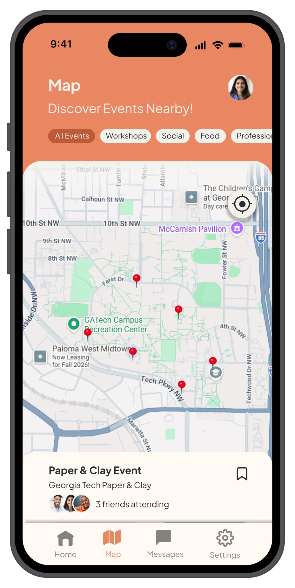
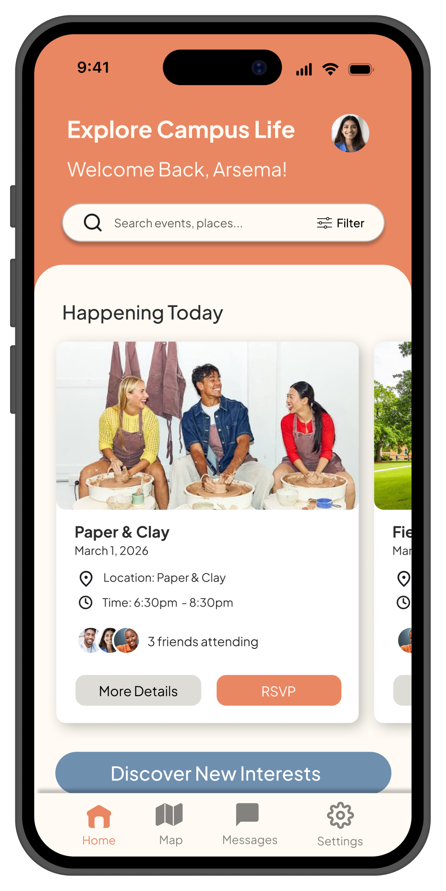
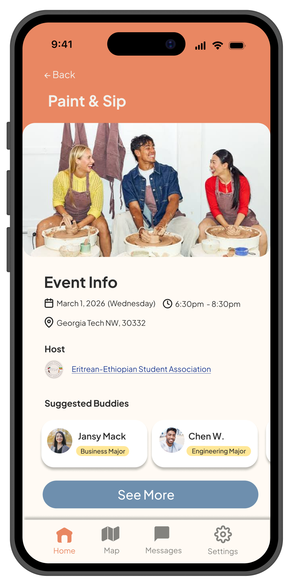
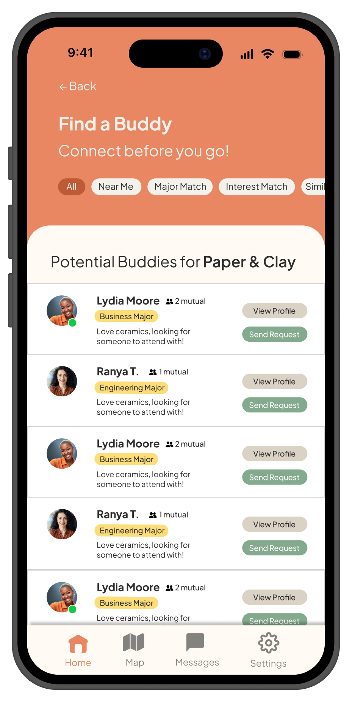

Student Interviews
Conducted 10 semi-structured interviews with college students to understand their experiences with campus social events, community building, and personal factors that influence attendance.
Bridging the gap between isolated students and campus communities.



01 — Overview
BridgeGT is a map-based, hobby-centric platform designed to improve students’ sense of belonging and create more spaces for social connection. By prioritizing accessible and digestible information, the project helps students evaluate campus events through a structured interface to reduce social isolation and cognitive overload.
Campus events are scattered across uncoordinated platforms, creating high cognitive load. Additionally, students face social anxiety and fear of social risk due to walking into events alone and unclear activity structures.
BridgeGT bridges the gap between students and events by combining a personalized dashboard, a granular filtering system, campus map and travel-time integration, and an opt-in Buddy System to prevent students from attending events alone.
02 — Research
Before designing the platform, we investigated how students currently discover campus events, what influences their decision to attend, and where social friction appears.
Conducted 10 semi-structured interviews with college students to understand their experiences with campus social events, community building, and personal factors that influence attendance.
Executed direct observations of four different student organizations to analyze real-time social dynamics and physical gaps between new and long-standing members.
Synthesized qualitative research using affinity diagramming to map behavioral patterns and pinpoint the specific friction points preventing students from engaging.
03 — Synthesis
The research helped frame BridgeGT around two connected challenges: making campus opportunities easier to discover and reducing the social risk students may feel when deciding whether to participate.
Bring scattered event information into a centralized experience that is easier to browse and evaluate.
Give students clearer information about events before they decide whether to attend.
Address the discomfort of entering unfamiliar social environments alone rather than treating event discovery as only an information problem.
04 — Design
The final concept combines event discovery, contextual information, campus navigation, and social support within one experience.
A personalized dashboard brings campus opportunities into one place, reducing the need to search across multiple disconnected sources.
Structured event information helps students understand what to expect before committing, making activities easier to evaluate at a glance.
Campus map and travel-time information connect event discovery with the practical question of how students will actually get there.
An opt-in Buddy System addresses the social hesitation students may experience when attending unfamiliar events by creating an alternative to arriving alone.

05 — Outcome
Together, these features create a more centralized and socially aware approach to discovering campus communities.
06 — Reflection
I learned how to design for emotional states such as social anxiety and loneliness rather than focusing only on functional workflows.
I learned how to synthesize complex, multi-app behaviors into a singular, cohesive ecosystem designed to reduce cognitive load.
I gained experience aligning research insights and design ideation across a multidisciplinary team.